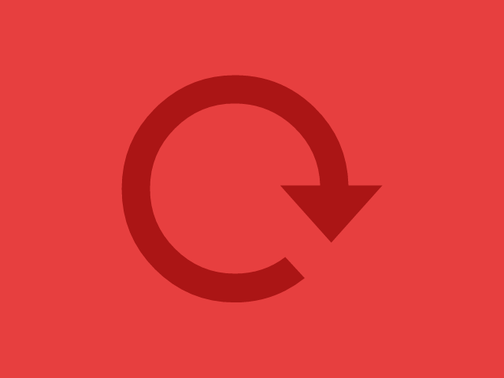

How to play
The rule is simple: send the panel to the correct direction, if you can! In DASH you must press the arrow accordingly to what is being shown within the remaining time and the number of lives. You have 3 lives, a timer that will be each round tighter and that will eventually vanish!
Too easy? There are also some things you must pay attention in order to dash!
Simple arrow
The simple arrow is the most basic and classic thing! Just press the right key in time and you're good.Reverse
It's a trap! If the background is striped, then you must take the opposite action that is being shown. For instance, if the image shows a right arrow, press the left key; If it shows up, then press down, and so on and so forth.Double arrow
To dismiss a panel like this, you must double press the required key in the same amount of time. As easy as pie!

Previous action
This one may seem tricky. DASH is not only about being fast, but also being attentive! If you ever see a symbol like this, then it is a previous arrow! It means you must repeat your last action!